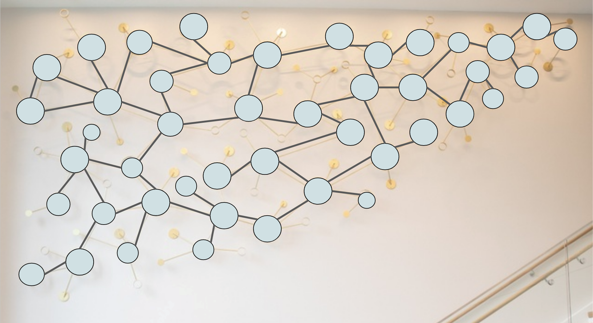
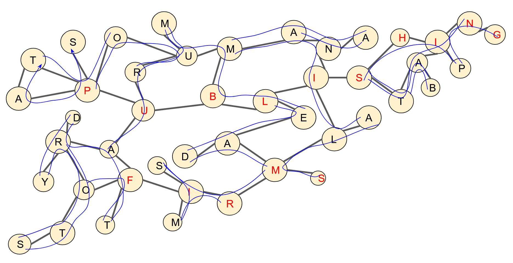

This puzzle references the Poetry of Reason, on Tufts' campus. All of the circles on the paper grid correspond to one of the circles with art on the sculpture itself. Looking at the sculpture itself, solvers can fill out the full grid.
Solvers can also fill out all of the crossword clues, which are presented in alphabetical order by answer.
| lambda: Money given to poor people (4) | ALMS |
| hypercube: ___ de Arnas (3) | ANA |
| red black tree: Old name for gold (5) | AURUM |
| axon: Designated hitter's tool (3) | BAT |
| power set of n: Forcibly pull into the military (5) | DRAFT |
| power set of n: Not wet (3) | DRY |
| conductance of a graph: Item alchemists often turned to gold (4) | LEAD |
| traveling salesman: Angry (3) | MAD |
| mosaic circle: Measure of magical power (4) | MANA |
| mosaic circle: Capital of the Philippines (6) | MANILA |
| ecg: Les ___ (3) | MIS |
| traveling salesman: Images of the body obtained with magnets (4) | MRIS |
| or gate: Say something indistinctly (6) | MUMBLE |
| regular expression: ___-cited (3) | OFT |
| bob: Choose (3) | OPT |
| rubber duck: ____ Pong (4) | PING |
| dna segment: Remove liquid from a container (4) | POUR |
| bayes' theorem: Edge of a basketball hoop (3) | RIM |
| sierpinski's triangle: Decays (4) | ROTS |
| y combinator: Item found in a bottle (4) | SHIP |
| circuit symbol: Polite term of address (3) | SIR |
| hello world scheme: Ejected saliva (4) | SPAT |
| y combinator: Something a traitor does to your back (4) | STAB |
| y combinator: What red wine can do to white carpet (5) | STAIN |
| cellular automata: Level of a building (5) | STORY |
| elliptic curve crypto: ""Lights out"" bugle call (4) | TAPS |
Now to place the words in the grid. The instructions for this are provided in the grid, and are true, except that there are two entries that are unclued. These entries are FIRMS and PUBLISHING, which combine to form the answer PUBLISHING FIRMS.
(Note that TAPS and SPAT are the same path, but in reverse on the grid.)